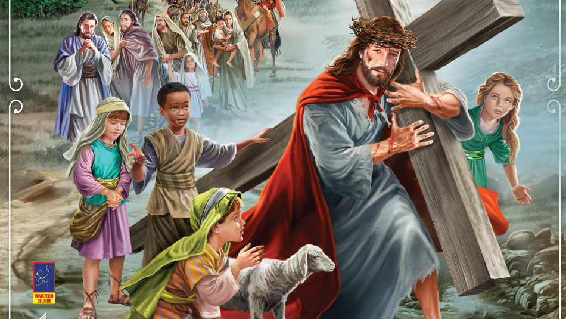
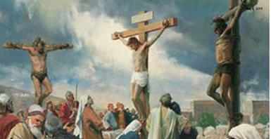
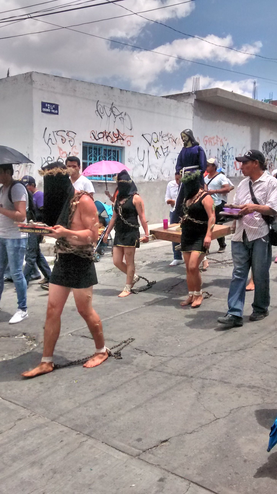
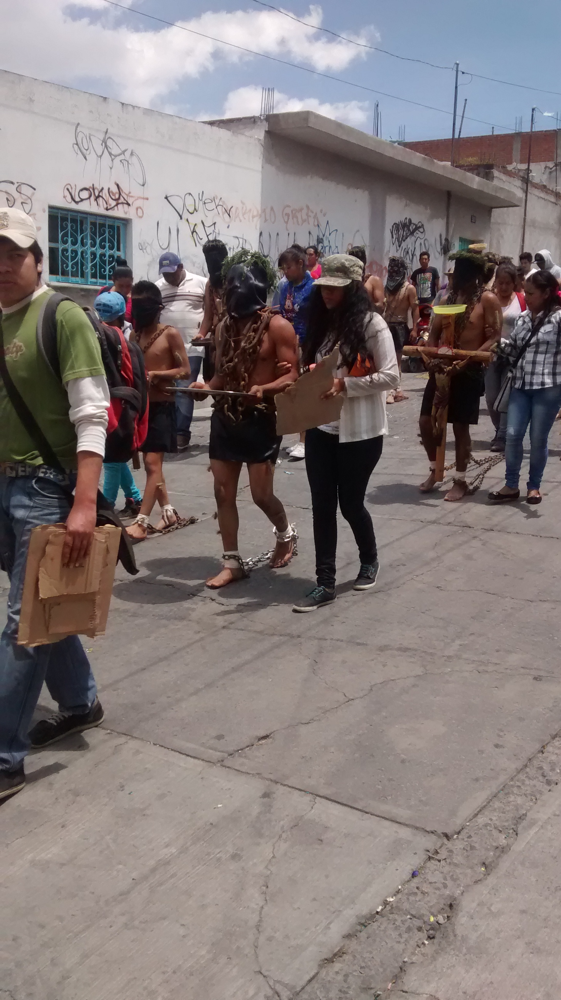
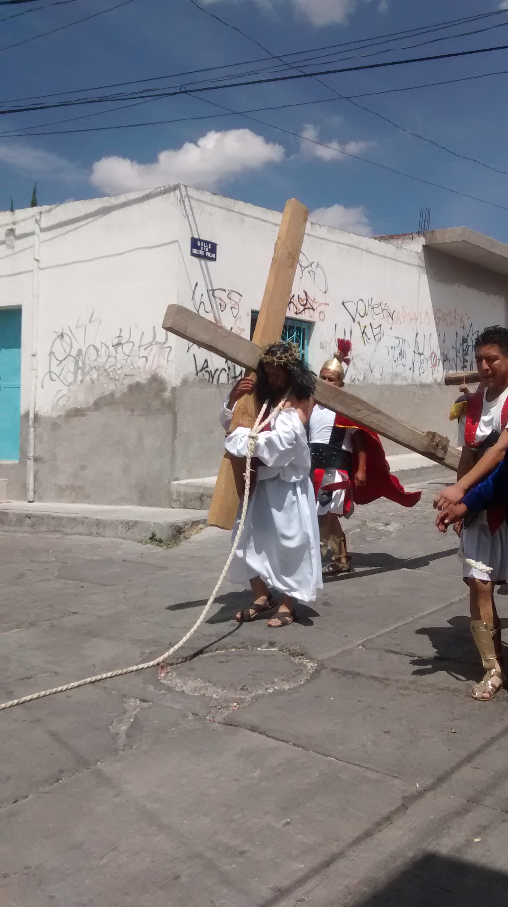

Semana Santa es una observación religiosa que se enfoca en la muerte y resurrección de Jesucristo.
Esta celebración cristiana ocurre durante la temporada de la pascua y es de suma importancia porque es cuando se recuerda los eventos principales que forman la base de esta fe.
La creencia principal del cristianismo es que Dios envió a su hijo Jesús al mundo para redimir al humano de sus pecados. Para lograr esto, Jesús murió en una cruz como sacrificio, tomando el lugar del pecador.
La Semana Mayor para los católicos es la época en la que se recuerda y celebra los hechos más relevantes en la vida de Jesús de Nazaret (la Pasión, Muerte y Resurrección), comenzando con el llamado Domingo de Ramos y finalizando el Domingo de Resurrección o también llamado de Pascua.
Tiene lugar después de la Cuaresma, el ciclo de cuarenta días que abarca desde el Miércoles de Ceniza hasta el Jueves Santo. Concretamente, la celebración comienza el domingo de Ramos y finaliza el Sábado Santo, aunque en algunos lugares se adelanta al viernes anterior (el de Dolores) y se prolonga hasta el Domingo de Resurrección.
Para la iglesia cristiana, la Semana Santa es el tiempo para recordar la muerte de Cristo. Para conmemorarla, se congregan en una jornada de oración y adoración, la cual inicia el Jueves Santo a las 9:00 de la noche y se extiende por 24 horas.
En esta reunión se dan cita grupos artísticos y musicales, ya que los cristianos creen que “Dios habita en medio de la alabanza”. Además, para ellos es fundamental la vigilia, es decir, pasar una noche en vela y adorando a Dios.
La jornada de adoración comienza el jueves en la noche y termina el viernes. En estas 24 horas, la comunidad cristiana ora por los enfermos y por las necesidades de cada una de las personas que habitan en este mundo.
Para los testigos de Jehová la Semana Santa comienza el 14 de abril, o 14 de Nisán, y comprende desde la puesta de sol hasta la próxima.
De acuerdo con su tradición, la única acción que Jesús mandó a conmemorar en esta fecha es la última cena; por esto, la comunidad se reúne en el Salón del Reino para recordar esta acción, reflexionar sobre ella y el significado de la muerte y resurrección de Jesús, como rey mas no como Dios todopoderoso.
En esta ceremonia, al igual que lo hizo Jesús, se reparte el pan y el vino, pero no todos son elegidos de participar de esta cena, pues este honor depende de los méritos de cada persona.
La Semana Santa de los mormónes inicia desde el Lunes Santo, y como suelen hacer muy habitualmente durante muchas semanas del año, se reúnen en lo que llaman la “noche del hogar” para recordar pasajes de la Biblia protestante y, sobre todo, de sus libros sagrados. Son momentos de estar en familia, de compartir, y recordar cómo Jesús, que era un hombre según ellos, sólo un hombre, se hizo Dios también, otro dios, por sus propias fuerzas y comportamiento, según ellos afirman, y esto mismo es lo que ellos también quieren hacer, convertirse en dioses y regentar el gobierno de algunos sistemas solares del universo.
El Vía Crucis de Atlixco, en el estado mexicano de Puebla, reúne desde hace más de un siglo en Semana Santa a un grupo de penitentes capaces de traspasar el umbral del dolor por su devoción, al salir en procesión encapuchados y descalzos, con grilletes y coronas de espinas.
Atlixco, un municipio situado a 30 minutos de Puebla capital y que fue nombrado recientemente Pueblo Mágico, acogió hoy la llamada procesión de los Engrillados, que se celebra cada Viernes Santo en medio de gran expectación.
Las principales calles de este municipio situado a unos 150 kilómetros por carretera de la capital mexicana, se cubren con alfombras decorativas elaboradas con serrín de colores en un recorrido de cinco kilómetros que comienza en el Exconvento de San Francisco.
Con un paso lento y quejumbroso, cientos de hombres semidesnudos y encadenados caminan en busca del perdón divino a través del dolor. "Es la fe, la devoción que tenemos para salir y para que este año nos vaya bien a nosotros y a la familia, una obra de agradecimiento", describe un engrillado a Efe los motivos que le llevan a salir cada año en la procesión.
Con motivo de la temporada de Semana Santa se instalara por quinto año consecutivo el tradicional tapete monumental, que contara con cuatro figuras entre flores, mariposas, además del logotipo de “Atlixco, Pueblo Mágico” y Cristo Rey, aunque de hecho por primera vez se contara con tres figuras en tercera dimensión.
La celebración de Semana Santa es para los poblanos una de las conmemoraciones más importantes del año cristiano; durante estos días aquellas personas que profesan alguna de las diferentes confesiones de la fe cristiana acuden a las iglesias más emblemáticas de Puebla para recordar la Pasión, Muerte y Resurrección de Jesús de Nazaret.
Esta tradición piadosa rescatada desde el año 1991 en Puebla, representa el caminar de Jesús, donde las imágenes más antiguas y con mayor número de devotos salen a recorrer las calles de Puebla, escenificando los misterios de la redención, culminando en punto de las tres de la tarde en la Catedral, para recordar la muerte de Jesucristo.
Desde el inicio de esta nueva etapa se decidió que únicamente cinco imágenes fueran cargadas en el cortejo, dos de la Virgen María y tres de Jesucristo. Las dos marianas aluden al momento dramático, pues son la Virgen Dolorosa y la Virgen de la Soledad y las otras de Jesús cargando la cruz a cuestas.
Los Festejos de Semana Santa de Iztapalapa son Patrimonio Cultural Intangible de la Ciudad de México. Desde hace 172 años, millones de mexicanos y turistas extranjeros han rememorado en el Cerro de la Estrella de Iztapalapa, la pasión de Cristo, la historia de cómo el hijo de Dios sufrió por el perdón de los pecados de la humanidad.
Desde 1843 en el Cerro de la Estrella o Huizachtepetl se conmemora la Pasión de Cristo. Diez años atrás, en 1833, los pobladores afectados y preocupados por la epidemia que azolaba a su comunidad, invocaron las imágenes de Cristo que se veneraban en sus respectivas ermitas de los barrios originales de Iztapalapa para que terminara la ola de muerte que se cernía entre sus familiares. A los pocos días, según cuenta la historia, la mortandad por el cólera cesó. Además del milagro de haber parado la epidemia, en San Lorenzo, uno de los pueblos de Iztapalapa, el Cristo invocado los favoreció con un agua milagrosa, pues del pie de un ahuehuete brotó un manantial y con el agua que de ahí emanó curaron a los enfermos y a la gente de los pueblos del sur.
A tan sólo 25 km de San Luis Potosí, rumbo a Zacatecas, se localiza Mexquitic de Carmona, un pueblo más antiguo que la capital misma, el cual sirvió como punto de avanzada para el descubrimiento de las minas de plata que dieron fama a toda esta región del Gran Tunal. Su principal atractivo, prácticamente inadvertido por los no potosinos, es una presa donde se realizan paseos en lancha, deportes acuáticos y pesca. Ahora bien, para el conocedor, el Museo-Zoológico José Villet ofrece una interesante oportunidad de apreciar objetos relativos a las ciencias naturales, un magro acuario y una notable colección de animales de diversas partes del país y del mundo; y aún más, para el buscador de maravillas, la parroquia de San Miguel resulta una pequeña joyita digna de admirarse a detalle. Originalmente de un convento franciscano del siglo XVI, el altar de la iglesia posee un asombroso retablo de 1630, de estilo churrigueresco con filigrana.
Esa noche, la cuidad se convierte en una iglesia: sus lados flanqueados por centenarios templos barrocos y por bóveda un gran cielo limpio y estrellado que ilumina el recorrido y acoge a los fervientes espectadores, quienes entre fervosos rezos y miradas de asombro, en silecion contemplan el paso de las diversas cofradías que penosamente cargan en las pesadas andas,las imágenes de la pasión.
El principal motivo de esta manifestación de fe es la pasión y muerte de cristo, a través de un Vía Crucis y los misterios Dolorosos del Rosario.Cuadro representa con una imagen llevada en pesadas plataformas de madera por los cofrades, que portan vestimentas con colores alusivos a la parroquia que pertenecen.
El inicio de esta tradición, debida a la gran religiosidad profesada por los habitantes de este pueblo minero, data, según los cronistas, de 1598, aunque en los archivos de la parroquia de Santa Prisca y San Sebastián se encuentran los registros de los primeros permisos otorgados por la Iglesia para celebrar una procesión del Cristo del Santo Entierro, en 1600. Esta celebración, que continúa hasta la fecha, se lleva a cabo, según lo marque el calendario católico, en el mes de marzo o abril, de acuerdo con el edicto del Concilio de Nicea, que en 325 estableció que la Pascua o Domingo de Resurrección se realizara el primer domingo que sigue a la luna llena que aparece después del equinoccio de primavera.
Uno de los atractivos turísticos más importantes que tiene el estado de Guerrero es la celebración de la Semana Santa en Taxco, ceremonia litúrgica conmovedora e impresionante, única en toda la República Mexicana. Parte fundamental en su desarrollo lo constituyen las dramáticas procesiones donde las imágenes religiosas son acompañadas, a lo largo de las empedradas calles de la ciudad, por cofradías de penitentes encapuchados, vestidos de negro y arrastrando cadenas que llevan sujetas a sus tobillos.
Desde 40 días previos a la Semana Mayor, se realizan ceremonias con motivo de los Seis Viernes de Cuaresma, correspondiendo a cada parroquia un día: el primer viernes a Tecalpulco; el segundo, a Acamixtla; el tercero a Tehuilotepec y Taxco el Viejo; el cuarto a La Veracruz; el quinto, se lleva a cabo en Atzala; y, el sexto, en Paintla.
Dentro de la gama de festejos religiosos para los Oaxaqueños la cuaresma y la Semana Santa reviste gran significado. El Primer Viernes de Cuaresma la Festividad del Señor de Las Misericordias en el Templo de San Juan de Dios, el Segundo Viernes de Cuaresma la Festividad del Señor de Las Maravillas en el Templo de La Defensa , el Cuarto Viernes de Cuaresma la Festividad de la Samaritana en la Ciudad de Oaxaca, el Quinto Viernes de Cuaresma la festividad del Señor de las Peñas en el Templo del Carmen Alto y la Festividad del Señor San Lázaro en la Villa de San Antonino Castillo Velasco.
El Sexto Viernes de Cuaresma, es el viernes de Dolores, una tradición de gran devoción en donde se rinde culto a la madre de Dios, colocando el Altar de la Virgen de Dolores, llegando así a la Semana Santa, la cual inicia para los Oaxaqueños con el Domingo de ramos, rememorando la entrada de Jesús en Jerusalen y la Festividad del Señor del Burrito en la Población de San Antonino Castillo Velasco.
El Lunes Santo se celebra con gran respeto en la Villa de Zaachila con una serie de actividades costumbristas relacionadas con la Semana Mayor, el Martes Santo con la Festividad del Señor de las tres caídas en el barrio de Xochimilco , el miércoles santo hay exhibiciones de los estandartes y relicarios de las diferentes cofradías y relicarios de los diversos barrios de la ciudad de Oaxaca, el Jueves Santo se realiza después de las seis de la tarde la Visita de Los Siete Templos, en donde los altares representan la última cena de Jesús con sus apóstoles y el Viernes Santo se realiza la Procesión del Silencio en donde participan las diversas cofradías de la ciudad de Oaxaca.
En el Estado de Oaxaca la Semana Santa muestra tintes diversos: desde el respeto y solemnidad con que los oaxaqueños acuden a los templos a tomar ceniza y el recogimiento con el que los católicos manifiestan su luto durante esta semana, hasta la alegría de los “Viernes del Llano” que los jóvenes, celebran en la ciudad capital, llenos de entusiasmo; o la colorida generosidad del “Día de la Samaritana”, con el obsequio de aguas frescas en templos, escuelas, oficinas, negocios, etc.
Es una procesión de carácter luctuoso en el cual se le da el pésame a la Virgen Morena. Su característica principal es que tantos los participantes como los espectadores mantienen silencio al paso de las imágenes de la procesión. Así se demuestra el respeto a la muerte de Jesús. La procesión pasa por las calles muy importantes de la ciudad: Andador Turístico, Xolotl, García Vigil, Morelos y termina en la iglesia de la Sangre de Cristo, todo el recorrido es hecho con un orden programado.